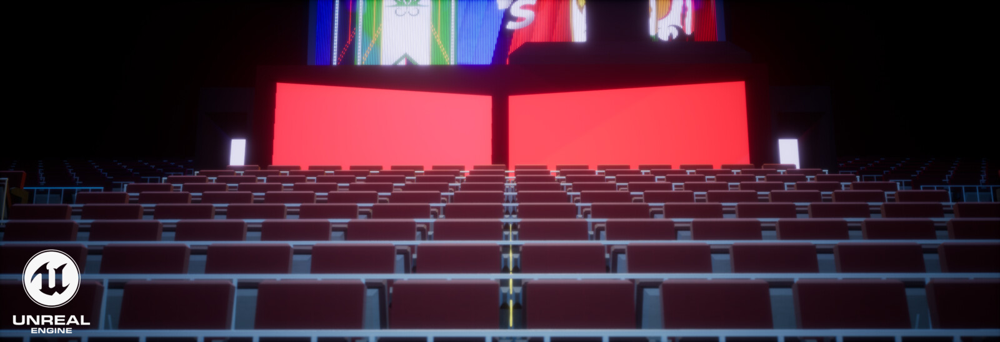
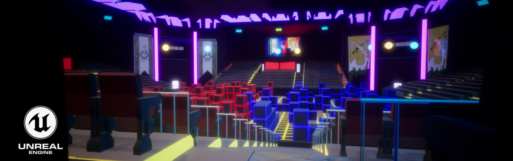
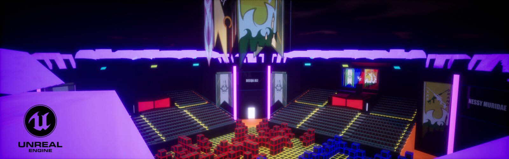
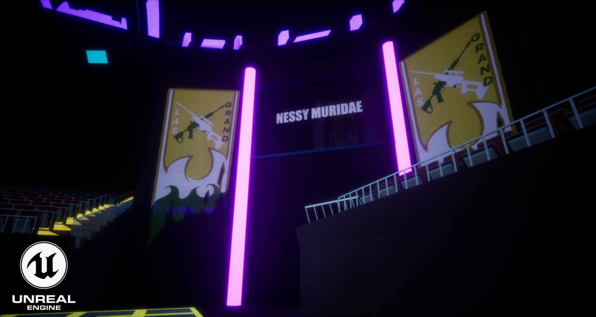
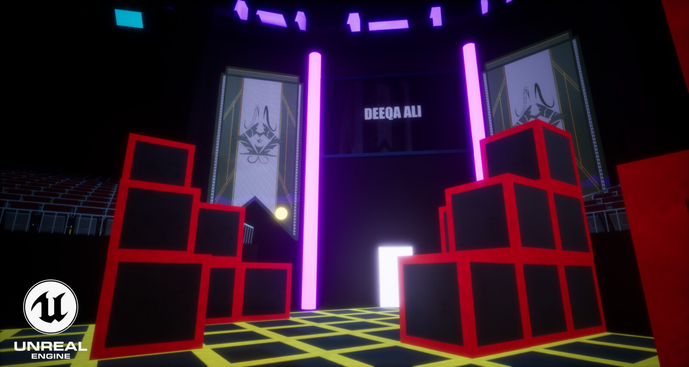

Celestial King Arena
This is the Shooting Arena I have made for my original series, Celestial King. The story line revolves around the protagonist, Jinx Godfrey who inherts Zodiac Signs from meteor. Before incorporating game mechanics to change it into a short game. I have enjoyed designing this enviornment.
ShowReel - YouTube

Stadium - Audience (Front View)
Stadium - Audience (Perspective View)

Stadium - Audience (Back View)

Stadium - Rooftop View

Stadium - Away Side

Stadium - Home Side